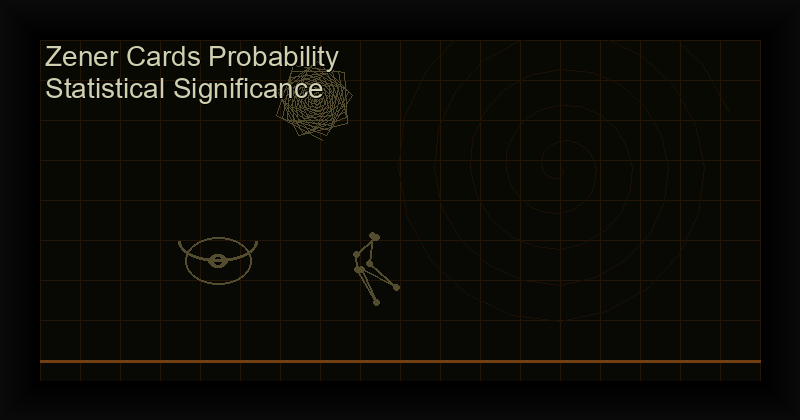

Zener Cards Probability Calculator: Statistical Significance of ESP Scores
Table of Contents
The Mathematics Behind Zener Card ESP Testing
Zener cards use a 5-symbol deck with 25 cards total (5 of each symbol). Random guessing yields an expected accuracy of exactly 20% (5 out of 25). The distribution of scores follows the binomial distribution: B(n=25, p=0.2).
Zener Cards Probability Calculator: Score Distribution Table
| Correct Guesses | Accuracy % | Probability | Interpretation |
|---|---|---|---|
| 0-3 | 0-12% | 0.8% | Below chance (possible psi-missing) |
| 4-6 | 16-24% | 71.5% | Normal chance range |
| 7 | 28% | 13.1% | Above average, not significant |
| 8 | 32% | 6.2% | Borderline (p > 0.05) |
| 9 | 36% | 2.5% | Statistically significant (p < 0.05) |
| 10 | 40% | 0.9% | Strong evidence of ESP |
| 12+ | 48%+ | 0.1% | Highly significant (p < 0.001) |
How to Calculate Zener Card Probability Yourself
The probability of exactly k correct guesses in 25 trials is:
P(k) = C(25,k) × 0.2^k × 0.8^(25-k)
Where C(25,k) = 25! / (k! × (25-k)!)
Example for k=10:
C(25,10) = 3,268,760
P(10) = 3,268,760 × 0.2^10 × 0.8^15
P(10) = 3,268,760 × 0.0000001024 × 0.035184
P(10) = 0.0092 (0.92%)Q&A: Zener Card Statistical Significance
What is the minimum score needed to prove ESP?
In parapsychology, the conventional threshold is p < 0.05 (5% probability that the result is due to chance). For a single 25-card run, you need 9 or more correct (36%) to reach p < 0.05. However, consistency across multiple runs is stronger evidence than any single run. Ten sessions averaging 30%+ (7.5/25) with low variance is compelling.
How does multiple testing affect significance?
If you run 100 sessions, you expect ~5 to show "significant" results by chance alone (p < 0.05). This is the multiple comparisons problem. Correct for it using Bonferroni: divide your alpha by the number of tests. For 20 sessions, use a = 0.05/20 = 0.0025.
What is the exact binomial probability formula for Zener cards?
P(k correct) = C(25,k) × 0.2^k × 0.8^(25-k). For cumulative probability (k or more correct), sum P(i) for i = k to 25. The PSI GYM app computes this automatically after every session and tracks your long-term p-value.
Can the Zener card test be cheated?
In physical form, yes — cards can have subtle markings. Digital versions eliminate this risk entirely. The PSI GYM app uses cryptographically secure random number generation to ensure true randomness, not pseudo-random patterns.
Track your ESP statistics automatically.
PSI GYM computes binomial probability, session history, and long-term trends — all offline, no ads, one-time purchase.
Get PSI GYM: Zener Cards & ESP ?The Scientific Study of ESP: From Rhine to Modern Research
Quantitative ESP research began in earnest at Duke University's Parapsychology Laboratory under J.B. Rhine in the 1930s. Rhine's key innovation was the use of statistical probability to evaluate psi phenomena—specifically, the Zener card deck of five symbols (circle, square, cross, star, waves). By calculating the probability of correct guesses beyond chance expectation, Rhine created a methodology that separated parapsychology from spiritualism and anecdote.
Rhine's early experiments produced odds against chance in the billions-to-one range. While controversial, these results established that psi phenomena could be studied scientifically. Modern researchers at institutions like the Institute of Noetic Sciences (IONS), the Princeton Engineering Anomalies Research (PEAR) lab, and the University of Virginia's Division of Perceptual Studies continue this tradition with rigorous methodology.
The most fascinating modern finding is that psi appears to operate outside conventional space-time constraints. Precognition experiments show that individuals can accurately perceive events before they occur, and remote viewing data suggests that spatial distance does not degrade accuracy. This challenges fundamental assumptions about consciousness and its relationship to physical reality.
Evidence-Based ESP Training Protocols
Research suggests that psi ability, like any skill, improves with structured practice. The most effective training protocols share several elements:
- Regular, brief sessions — 10-15 minutes daily outperforms marathon weekly sessions. Consistency builds the neural pathways associated with psi reception.
- Immediate feedback — Knowing whether you were correct immediately after each trial reinforces successful patterns and helps correct ineffective strategies.
- Altered state induction — Brief meditation or relaxation before sessions significantly improves scores. Alpha-state training (8-12 Hz brainwave activity) appears particularly beneficial.
- Blind protocols — Having someone else generate targets or using automated systems like our free Zener card test prevents unconscious cueing.
The PSI GYM app implements all these evidence-based protocols in a structured training program with progress tracking. For serious practitioners, combining daily app training with the techniques described in our blog posts creates a comprehensive psi development practice.
Evidence-Based Magick: Tracking and Measuring Results
The single most important practice separating effective magicians from perpetual dabblers is systematic result tracking. Without measurement, you have no way to know which techniques work, which conditions amplify results, and which intentions manifest reliably.
Create a Results Database — For each working, record: date, time, lunar phase, planetary hour (if used), the specific technique (sigil, servitor, ritual, etc.), the intention verbatim, the gnosis method (meditation, sex, dancing, sensory deprivation, etc.), and a predicted outcome timeline. Then track whether the intention manifested, partially manifested, or did not manifest, and by what date.
Calculate Your Success Rate — After 20-30 workings, review your data. You'll likely find that certain techniques have 70-80% success rates while others sit at 20-30%. This is not a judgment on the technique—it's information about what works for YOUR unique energetic signature. Double down on what works. Experiment with what doesn't.
Identify Amplifying Conditions — Your data will reveal patterns: workings performed during specific lunar phases manifest faster, certain sigil methods produce more physical-world results while others affect psychological states, some intentions require reinforcement while others manifest instantly. These patterns become your personal magical tradition.
The free tools on this site—sigil generator, spell builder, lunar phase calculator—help you execute workings consistently. Premium Android apps provide tracking and analytics for serious practitioners who want to measure and optimize their magical output.
The Role of Feedback in ESP Development
One factor consistently emerges as critical in ESP research: immediate, accurate feedback. Studies comparing training methods show that participants who receive instant feedback after each trial improve dramatically, while those practicing without feedback show no improvement over chance.
The mechanism is similar to any skill acquisition. Your brain needs to know whether its "guess" was correct to calibrate the subtle perceptual processes involved in psi reception. Without feedback, you're practicing blind—you might be correctly identifying subtle cues or reinforcing incorrect strategies, and you have no way to distinguish between them.
For solo practice, automated testing platforms are essential. Our free Zener card test provides immediate feedback and tracks your scores over time. The PSI GYM app extends this with structured training protocols, difficulty progression, and detailed analytics that show which conditions produce your best scores.
For partner practice, have one person generate targets while another guesses, with immediate confirmation. Switch roles regularly. This social dimension adds accountability and often produces surprisingly strong results—psi seems to flourish in supportive, playful contexts. Record all sessions in a dedicated journal, noting environmental factors (time of day, noise level, your energy state) that correlate with higher scores.
The Magical Record: Your Most Important Tool
If you take only one piece of advice from this entire site, let it be this: keep a magical record. Not a journal of experiences (though that's valuable), but a systematic log of what you did, when you did it, and what happened afterward.
A proper magical record includes: (1) the date, time, and lunar phase of the working, (2) the specific technique or ritual used, (3) the exact wording of the intention, (4) the method of gnosis employed, (5) the immediate results during the working (visions, sensations, insights), (6) the results observed in the following days and weeks, and (7) a final assessment (success, partial, failure, or too early to tell).
After 30-50 recorded workings, patterns emerge that transform your practice. You'll discover that certain sigil methods produce 80% success while others barely reach 30%. You'll see which lunar phases amplify your workings. You'll identify the conditions—time of day, location, mental state—that correlate with your best results.
This evidence-based approach is the heart of modern chaos magick: test everything, keep what works, discard what doesn't. Our free sigil generator and spell builder make execution consistent, but your personal record is what transforms occasional practice into a genuine magical technology. For digital record-keeping with analytics, explore the premium app collection.
References
- Rhine, J.B. (1934). Extra-Sensory Perception. Boston: Boston Society for Psychic Research.
- Bem, D.J. (2011). "Feeling the future." Journal of Personality and Social Psychology, 100(3), 407-425.
- Utts, J. (1991). "Replication and meta-analysis in parapsychology." Statistical Science, 6(4), 363-403.